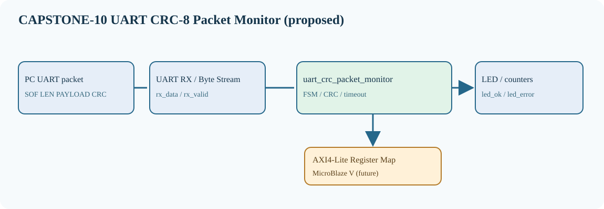

CAPSTONE-10 — UART 프레임 CRC-8 무결성 감시·오류 계수기
자체 창작 설계형 캡스톤. 신규 RTL·테스트벤치·합성·보드 시험 미실시.
1. 시스템 블록도 — 실제 표시 가능한 SVG
PC UART → UART RX → uart_crc_packet_monitor → LED·상태 카운터 → AXI4-Lite/MicroBlaze V 확장

SVG · JSON 메타데이터 · 전체 Markdown 설계서

2. 구성과 전원
| 입력 | 인터페이스·제어 | 출력 |
|---|---|---|
| PC USB-UART 8N1 / rx_data / rx_valid | SOF A5 · LEN 1~16 · CRC-8/ATM · 20ms timeout | Basys3 led_ok, led_error, packet_ok_count, packet_error_count |
외부 5V TTL 연결 없이 내장 USB-UART와 LED만 사용. Basys3 I/O 3.3V, XADC 0~1V 입력과 혼동 금지.
3. FSM과 타이밍
WAIT_SOF --A5--> READ_LEN --1..16--> READ_PAYLOAD --LEN bytes--> READ_CRC READ_CRC --match--> ACCEPT --> WAIT_SOF READ_LEN --invalid--> ERROR --> WAIT_SOF READ_CRC --mismatch--> ERROR --> WAIT_SOF READ_LEN / READ_PAYLOAD / READ_CRC --20ms timeout--> ERROR --> WAIT_SOF
4. 신호표
| 신호 | 기능 |
|---|---|
rx_data[7:0] | 수신 바이트 |
rx_valid / rx_ready | Byte Stream handshake |
led_ok / led_error | 마지막 프레임 판정 |
packet_ok_count[15:0] | 정상 프레임 포화 카운트 |
packet_error_count[15:0] | 오류 프레임 포화 카운트 |
error_code[2:0] | CRC/LEN/TIMEOUT |
clear_stats | 카운터 초기화 펄스 |
5. 시험 시나리오·구현 순서
Reset, 정상 CRC, 변조 CRC, LEN=0, LEN=17, payload 내부 A5, 20ms 타임아웃, 연속 프레임, 통계 포화, 동시 clear, 수신 오버런을 자동 검증한다. RTL Controller → self-checking TB → Basys3 UART 연결 → AXI4-Lite 상태 레지스터 → MicroBlaze V SoC 순으로 확장한다.
6. 출처·검증 단계
기존 UART 기술자료 · RTL03 UART 학습 · AMD AXI UART Lite · CRC-8/ATM 규약. 외부 이미지·소스 복제 없음. 원본 코드 재배포 라이선스 검토가 필요한 자료는 링크로만 제공한다.
설계 문서 작성과 GitHub 게시용 파일 생성은 RTL 동작 검증이 아니다. Simulation, Synthesis, Timing, Board Test 모두 미실시.